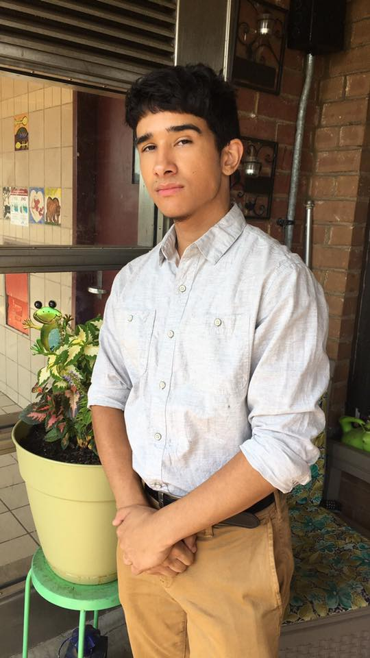

About TehCyfer
A little about myself.
Johnny Medina otherwise known as "TehCyfer" Is an 18 year old self taught artist. He's self taught in graphic designing, video editing, game texturing, beatmaking and animation. His graphic designer career started out in the Fall of 2010 when he was into gaming with friends. Gaming groups on youtube were looking for designers to revamp their channels, that's when it initially hit him that, that's what he wanted to pursue. Starting out with paint and gimp, design applications he taught himself the basic concepts and tools. 2 years later in the Summer of 2012 he was picked up by a gaming community and was interest in making some video edits by compiling and putting clips together by syncing music and adding effects. He started off on Sony Vegas and slowly progressed and perfected his art. By 2014 he wanted to start creating video intros for the gaming channels he did revamps for, he first start on Cinema 4D a professional 3D program for modeling and animation. Lastly, in the Summer of 2017 he started exploring some basic programs such as Audacity by sampling audio and music together. He has moved away from Audacity and now uses FL Studio for his beatmaking. In 2016 Johnny created a community called "Oasis" which was originally a gaming community but branched out into areas of editing, graphic designing, and music too. Johnny was the CEO of Oasis, and the branches created from it. The most branch successful being Oasis Tranquility the editing branch, having 20 employees under him including one co-owner called Traps. As of now Johnny is currently studying at BMCC (Borough of Manhattan Community College) pursuing a degree in Multi Media Art.
Click below to move to a different page